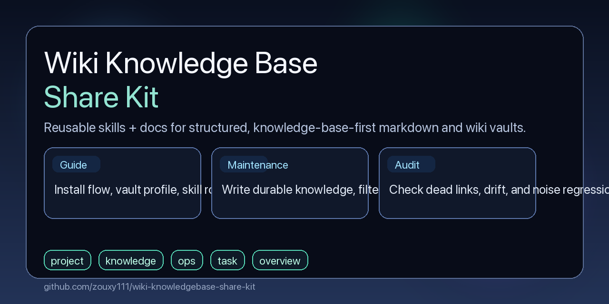

knowledge-base-kit-guide
Explains installation, profile setup, and which skill to use first when the user is new to the kit.
A reusable open-source kit with 4 installable skills, profile-driven configuration, and an ingest / maintenance / audit split for markdown and wiki knowledge bases. The ingest loop is test-driven: start with a baseline, then refine structure through regression and comparison.
This project is for vaults that have drifted into a mix of notes, replay logs, and unstable structure. The kit pulls them back toward durable retrieval.
| Typical drifting vault | Target state with this kit |
|---|---|
| Root pages accumulate temporary execution history. | Root pages return to navigation, stable boundaries, and topic entrypoints. |
ops pages become chronological logs. |
ops pages become reusable symptom / root cause / fix / boundary references. |
log.md turns into task replay. |
log.md stays milestone-only. |
| Content exists without stable entrypoints. | Pages are discoverable from root pages or the reader entrypoint. |
The kit is designed for people who want a vault that stays navigable and durable over time instead of turning into a long pile of project notes.
Explains installation, profile setup, and which skill to use first when the user is new to the kit.
Splits long markdown sources or books into reusable pages, builds navigation links, and generates TOC, glossary, and related-link suggestions. The first import is a baseline for later refinement.
Writes durable conclusions into the right page role, filters process noise, and syncs content plus navigation surfaces.
Checks metadata, dead links, orphan pages, boundary drift, navigation coverage, and noise regression.
This repository works best when the user accepts a small amount of structure in exchange for a much cleaner long-term vault.
Teams and individuals already using markdown or wiki vaults, who want durable retrieval, role clarity, and a repeatable maintenance plus audit loop.
People who want a pure log-first system, do not want to configure a profile, or reject the fixed page-role model entirely.
The workflow is intentionally simple: configure once, then run maintenance and audit as separate loops.
skills/ directory.A good long-form ingest is not a one-shot import. The initial structure should be treated as a baseline, then improved through testing, regression checks, and version comparison.
Import the source into an overview/chapter/topic structure with lineage, TOC, glossary candidates, and related-link suggestions.
Use real retrieval and navigation feedback to compare split strategies, page roles, and maintenance cost across iterations.
Run regression checks on entry pages, lineage, and key links after each revision so the knowledge base gets cleaner instead of noisier.
A ready-to-forward preview image is included for release pages, social posts, or repository announcements.

Core developers of this repository and share kit.
Repository co-developer.
Repository co-developer.